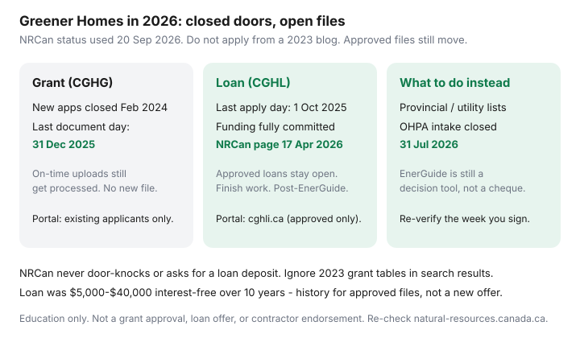

Utilities · Canada
Canada Greener Homes Grant and Loan status in 2026: what’s closed and what to do instead
Canadians still open a 2023 tab that says “apply for Greener Homes” and then spend a Saturday on a portal that will not take a new file. The Canada Greener Homes Grant and the Canada Greener Homes Loan are closed to new applicants. That is not a rumour. It is the banner on Natural Resources Canada’s own pages.
This is a date-stamped status map for September 2026: what closed, which existing files still move, and where to look instead. It is not a grant application. If you are shopping a heat pump, pair it with provincial rebate hygiene and heat pump vs furnace.
Disclosure: Heat-pump quote tools are an offer type. Saving Optimizer may earn a commission if we later add partner links. We do not currently claim NRCan, CGHLI, or contractor partnerships. This is education — not a grant approval, loan offer, or installation advice.
Key takeaways
- The Grant closed to new applications in February 2024. 31 December 2025 was the last day for existing applicants to upload documents. On-time files continue to be processed.
- The Loan last-apply day was 1 October 2025. NRCan’s page (modified 17 April 2026) says funding is fully committed and no new applications can be approved. Approved loans remain available.
- If you already have approval: finish the listed retrofits, get a post-retrofit EnerGuide, request funding in the official portal. Do not start work you never put on the file.
- Search still surfaces dead “up to $5,000” posts. Start at natural-resources.canada.ca. Ignore door-to-door “NRCan” pitches — they are not NRCan.
- Next money is provincial or utility. Federal OHPA intake closed 31 July 2026. An EnerGuide visit is still a decision tool.
Grant closed to new applicants; documentation deadlines date-stamped
NRCan’s Grant process page and the closed-Grant page (used 20 Sep 2026) say the same thing in large type: this program is closed. Applications were open from May 2021 to February 2024. 31 December 2025 was the last day to submit documents. Requests uploaded by that deadline continue to be processed. There is no new “open the portal and start a file” path.
The old story — pre-retrofit EnerGuide, eligible upgrades, post-retrofit visit, then an evaluation contribution of up to $600 inside a completed grant — is history. Do not budget that $600 against a 2026 advisor invoice unless a live provincial path reimburses it. See what an evaluation includes.

Loan: application closed; funding fully committed
The Loan was a different product: an unsecured, interest-free personal loan from $5,000 to $40,000 over 10 years, delivered through the Canada Greener Homes Loan Initiative portal. That product is closed.
| Clock | Status at draft | What it means |
|---|---|---|
| New applications | Closed — last apply day 1 Oct 2025 | Do not start a file. Do not pay a third party to “submit for you.” |
| Funding | Fully committed (NRCan, 17 Apr 2026) | No further approvals. March 2026 fiscal chatter is history; the live word is committed. |
| Already approved | Not affected | Your funding remains available if you follow the file: work, post-EnerGuide, request funding. |
| EnerGuide invoice | Homeowner pays | The Loan never covered the evaluation. It still does not. |
NRCan’s January 2026 Greener Homes Initiative progress update is useful context for how many files moved. It is not an application window. If a salesperson says “the Loan reopened for 2026,” ask them to show the live NRCan URL with today’s date in the browser bar.
If you already have approval: portal steps and post-retrofit EnerGuide
Approved Grant claimants work in the Canada Greener Homes portal. Approved Loan borrowers work in the CGHLI portal (cghli.ca). They are not the same login. NRCan is explicit: do not let a contractor submit documentation on your behalf, and the Loan team will never ask for a deposit.
- Open the portal that issued your approval email — not a Google ad.
- Complete only the retrofits that were on the approved application. Loan rules: you cannot add extra measures later. If you drop a measure, the final amount can shrink (and must stay at least $5,000).
- Keep invoices. DIY labour is not eligible; materials bought in Canada can be, if the measure was on the file.
- Book a post-retrofit EnerGuide evaluation with an NRCan-listed service organization. Upload can take up to 30 days.
- Loan borrowers: sign back in and choose Request Funding. Final costs above the estimate do not increase the loan. The remainder typically lands in about 10 days after approval of that request.
- Then you repay for 10 years. The Loan is reported to the credit bureau.
If the portal is confusing, use the numbers NRCan publishes: Grant inquiries via the Grant email/phone on the closed-Grant page; Loan inquiries 1-866-292-9517 or Questions@cghli.ca. Do not use a number from a flyer on your door.
Why “Greener Homes” still appears in search — and how to avoid outdated advice
The phrase is still a good search query. The pages that rank are often 2022–2024 walkthroughs with screenshots of a live Apply button. Treat any article that does not say closed in the first screen as stale.
- Start at the NRCan Greener Homes Initiative hub. Look for “THIS PROGRAM IS CLOSED.”
- Check the “Date modified” line. The Loan page we used is 17 April 2026. The closed-Grant page we used is 30 January 2026.
- Municipal “green your home” pages sometimes still list Greener Homes as if it were open. Call the municipality or follow their link all the way to NRCan.
- A quote that deducts “$5,000 Greener Homes” from today’s price is a sales document, not a government commitment.
The Canada Greener Homes Affordability Program is a different, income-targeted retrofit path delivered with provinces. It is not a DIY grant you apply for beside an old EnerGuide PDF. Check the current NRCan pointer; do not invent an amount.
Where to look next: provincial and utility directories, plus OHPA wind-down notes
Live money, if any, is on provincial efficiency sites and utility programs:
- Ontario: Save on Energy / Home Renovation Savings, plus the income-qualified Energy Affordability Program.
- B.C.: CleanBC Better Homes (including the income-tested Energy Savings Program).
- Québec: Hydro-Québec LogisVert / Efficient Heat Pump pages and the provincial Chauffez vert oil path.
- Atlantic: Efficiency Nova Scotia, SaveEnergyNB / ecoénergienb, efficiencyPEI — several 2026 clocks have already closed; verify.
- Prairies: often thinner. Alberta has no provincial heat-pump rebate as of this draft; municipal CEIP financing is a different product.
Federal OHPA intake closed 31 July 2026. Existing oil-to-heat-pump applicants have a 31 January 2027 document deadline. That is not a new Grant.
EnerGuide evaluations are still useful without federal grant stacking
A registered energy advisor still measures the house, runs a blower door, and hands you a GJ/year label plus a renovation list you can make contractors bid against. NRCan’s public cost note remains about $600–$1,000 for the pre- plus post-retrofit pair. You pay it. That is cheaper than a mis-sized compressor or a blown-in attic over open chases.
Rank the upgrade report with a practical ROI order — air sealing before solar nostalgia. Then price only live provincial stacks the week you sign.
Sources & date stamps
- NRCan, How the grant process works / Closed: Canada Greener Homes Grant — last document day 31 Dec 2025 (used 20 Sep 2026).
- NRCan, Canada Greener Homes Loan — closed; funding fully committed; page modified 17 Apr 2026; last apply day 1 Oct 2025.
- NRCan, Greener Homes Initiative progress update: January 2026.
- CGHLI portal (cghli.ca) — approved Loan borrowers only; no third-party deposits.
- NRCan, OHPA — intake closed 31 Jul 2026; documents 31 Jan 2027.
Frequently asked questions
Can I still apply for the Canada Greener Homes Grant in 2026?
No. New applications closed in February 2024. 31 December 2025 was the last day for existing applicants to upload documents. Files submitted on time are still being processed.
Is the Greener Homes Loan still taking applications?
No. 1 October 2025 was the last apply day. NRCan’s Loan page (modified 17 April 2026) says funding is fully committed and new applications cannot be approved. Approved loans stay available.
I already have loan approval. What do I do now?
Finish only the retrofits on the approved file, book the post-retrofit EnerGuide evaluation, then request funding in the CGHLI portal. Do not add extra work and expect the loan to grow.
Why do search results still tell me to apply?
Old blogs rank. Look for “THIS PROGRAM IS CLOSED” on natural-resources.canada.ca, not a 2023 how-to. If a contractor quotes Greener Homes as live cash, walk.
Is an EnerGuide evaluation still worth paying for?
Yes as a decision tool — blower door, GJ/year label, quote sheet — even though the old up-to-$600 federal contribution travelled with a closed grant. Typical pair: about $600–$1,000.